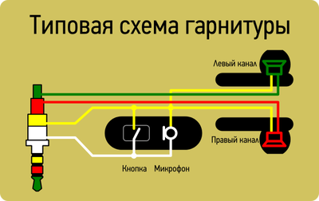
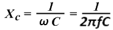
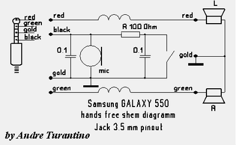

В Huawei Honor 6 распайка сделана согласно стандарту CTIA (т.н. новый стандарт). К нему относится большинство новых смартфонов. В быту такую распайку называют «под Samsung».
Схема распайки представлена на следующем рисунке:
Схема срабатывания кнопки обычно рисуют упрощенной, поэтом непонятно как работает микрофон при нажатии кнопки.

На самом деле схема имеет конденсаторы. Обычно, параллельно микрофону и кнопке, стоит конденсатор. Подача сигнала приведет к падению сопротивления Xc до R кнопки.
В примере на картинке Xc = ~16кГц:

